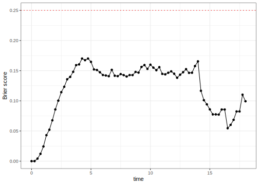
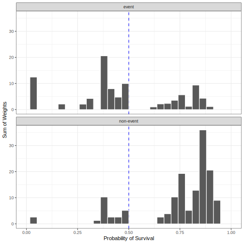
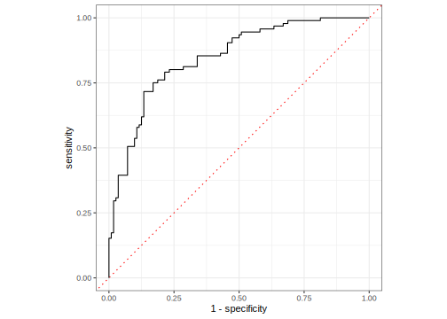
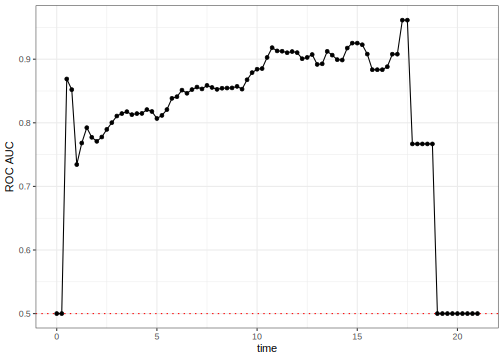

To use the code in this article, you will need to install the following packages: censored, prodlim, and tidymodels. You’ll need the development versions of censored and parsnip. To install these, use
#install.packages("pak")
pak::pak(c("tidymodels/censored", "tidymodels/parsnip"))One trend in modern survival analysis is to compute time-dependent measures of performance. These are primarily driven by an increased focus on predictions for the probability of survival at a given time (as opposed to the predictions of event times or linear predictors). Since these are conditional on the time of evaluation, we call them dynamic performance metrics.
Many dynamic metrics are similar to those used for binary classification models. The basic idea is that, for a given time \(t\) for model evaluation, we try to encode the observed event time data into a binary “has there been an event at time \(t\)?” version. We can also convert the predicted survival probabilities into predicted events/non-events based on a threshold (default is 0.50). The survival versions of these metrics need those binary versions of observed truth and predictions as well as a way to account for censoring.
Censoring plays into the details of the conversion and is additionally captured in the form of weights. For details on both these aspects, see the Accounting for Censoring in Performance Metrics for Event Time Data article.
To start, let’s define the various types of times that will be mentioned:
As an example, we’ll simulate some data with the prodlim package, using the methods of Bender et al (2005). A training and a validation set are simulated. We’ll also load the censored package so that we can fit a model to these time-to-event data:
library(tidymodels)
library(censored)
#> Loading required package: survival
library(prodlim)
set.seed(5882)
sim_dat <- SimSurv(2000) %>%
mutate(event_time = Surv(time, event)) %>%
select(event_time, X1, X2)
set.seed(2)
split <- initial_split(sim_dat)
sim_tr <- training(split)
sim_val <- testing(split)
## Resampling object
sim_rs <- vfold_cv(sim_tr)We’ll need a model to illustrate the code and concepts. Let’s fit a bagged survival tree model to the training set:
set.seed(17)
bag_tree_fit <-
bag_tree() %>%
set_mode("censored regression") %>%
set_engine("rpart") %>%
fit(event_time ~ ., data = sim_tr)
bag_tree_fit
#> parsnip model object
#>
#>
#> Bagging survival trees with 25 bootstrap replications
#>
#> Call: bagging.data.frame(formula = event_time ~ ., data = data)Using this model, we’ll make predictions of different types.
This censored regression model can make static predictions via the predicted event time using predict(object, type = "time"). It can also create dynamic predictions regarding the probability of survival for each data point at specific times. The syntax for this is
predict(object, new_data, type = "survival", eval_time = numeric())where eval_time is a vector of time points at which we want the corresponding survivor function estimates. Alternatively, we can use the augment() function to get both types of prediction and automatically attach them to the data.
The largest event time in the training set is 21.083 so we will use a set of evaluation times between zero and 21.
time_points <- seq(0, 21, by = 0.25)
val_pred <- augment(bag_tree_fit, sim_val, eval_time = time_points)
val_pred
#> # A tibble: 500 × 5
#> .pred .pred_time event_time X1 X2
#> <list> <dbl> <Surv> <dbl> <dbl>
#> 1 <tibble [85 × 5]> 6.66 4.83 1 -0.630
#> 2 <tibble [85 × 5]> 6.66 6.11 1 -0.606
#> 3 <tibble [85 × 5]> 7.47 6.60+ 1 -1.03
#> 4 <tibble [85 × 5]> 3.29 2.72 1 0.811
#> 5 <tibble [85 × 5]> 5.10 4.73+ 1 -0.376
#> 6 <tibble [85 × 5]> 4.99 8.70 0 1.18
#> 7 <tibble [85 × 5]> 7.23 10.82 1 -0.851
#> 8 <tibble [85 × 5]> 6.46 6.89 0 0.493
#> 9 <tibble [85 × 5]> 4.75 2.45+ 1 0.0207
#> 10 <tibble [85 × 5]> 13.4 8.23+ 0 -1.52
#> # ℹ 490 more rowsThe observed data are in the event_time column. The predicted survival probabilities are in the .pred column. This is a list column with a data frame for each observation, containing the predictions at the 85 evaluation time points in the (nested) column .pred_survival.
val_pred$.pred[[1]]
#> # A tibble: 85 × 5
#> .eval_time .pred_survival .weight_time .pred_censored .weight_censored
#> <dbl> <dbl> <dbl> <dbl> <dbl>
#> 1 0 1 0 1 1
#> 2 0.25 1 0.250 0.999 1.00
#> 3 0.5 0.999 0.500 0.996 1.00
#> 4 0.75 0.992 0.750 0.993 1.01
#> 5 1 0.988 1.00 0.991 1.01
#> 6 1.25 0.980 1.25 0.987 1.01
#> 7 1.5 0.972 1.50 0.981 1.02
#> 8 1.75 0.959 1.75 0.971 1.03
#> 9 2 0.938 2.00 0.966 1.04
#> 10 2.25 0.925 2.25 0.959 1.04
#> # ℹ 75 more rowsThe yardstick package currently has two dynamic metrics. Each is described below.
The Brier score is a metric that can be used with both classification and event-time models. For classification models, it computes the squared error between the observed outcome (encoded as 0/1) and the corresponding predicted probability for the class.
A little math: suppose that the value \(y_{ik}\) is a 0/1 indicator for whether the observed outcome \(i\) corresponds to class \(k\), and \(\hat{p}_{ik}\) is the estimated class probability. The classification score is then:
\[ Brier_{class} = \frac{1}{N}\sum_{i=1}^N\sum_{k=1}^C (y_{ik} - \hat{p}_{ik})^2 \]
For survival models, we transform the event time data into a binary version \(y_{it}\): is there an event at evaluation time \(t\)1. The survival function estimate \(\hat{p}_{it}\) is the probability that corresponds to non-events at time \(t\). For example, if were has not been an event at the current evaluation time, our best model should estimate the survival probability to be near one. For observations that are events, the probability estimate is just one minus the survivor estimate. To account for censoring, we also weight each observation with \(w_{it}\). The time-dependent Brier score is:
\[ Brier_{surv}(t) = \frac{1}{N}\sum_{i=1}^N w_{it}\left[\underbrace{I(y_{it} = 0)(y_{it} - \hat{p}_{it})^2}_\text{non-events} + \underbrace{I(y_{it} = 1)(y_{it} - (1 - \hat{p}_{it}))^2}_\text{events}\right] \]
For this score, a perfect model has a score of zero, while an uninformative model would have a score of around 1/4.
How do we compute this using the yardstick package? The function brier_survival() follows the same convention as the other metric functions. The main arguments are:
data: the data frame with the predictions (structured as the output produced by augment(), as shown above).truth: the name of the column with the Surv object....: the name of the column with the dynamic predictions. Within tidymodels, this column is always called .pred. In other words, .pred should be passed without an argument name.Since the evaluation times and the case weights are within the .pred column, there is no need to specify these. Here are the results of our validation set:
brier_scores <-
val_pred %>%
brier_survival(truth = event_time, .pred)
brier_scores
#> # A tibble: 85 × 4
#> .metric .estimator .eval_time .estimate
#> <chr> <chr> <dbl> <dbl>
#> 1 brier_survival standard 0 0
#> 2 brier_survival standard 0.25 0
#> 3 brier_survival standard 0.5 0.00202
#> 4 brier_survival standard 0.75 0.00796
#> 5 brier_survival standard 1 0.0266
#> 6 brier_survival standard 1.25 0.0402
#> 7 brier_survival standard 1.5 0.0563
#> 8 brier_survival standard 1.75 0.0785
#> 9 brier_survival standard 2 0.0895
#> 10 brier_survival standard 2.25 0.0951
#> # ℹ 75 more rowsOver time:
brier_scores %>%
ggplot(aes(.eval_time, .estimate)) +
geom_hline(yintercept = 1 / 4, col = "red", lty = 3) +
geom_line() +
geom_point() +
labs(x = "time", y = "Brier score")
There is also an integrated Brier score. This required evaluation times as inputs but instead of returning each result, it takes the area under the plot shown above. The syntax is the same but the result has a single row:
val_pred %>% brier_survival_integrated(truth = event_time, .pred)
#> # A tibble: 1 × 3
#> .metric .estimator .estimate
#> <chr> <chr> <dbl>
#> 1 brier_survival_integrated standard 0.113Again, smaller values are better.
When we not only turn the event time data into a binary representation but also the predicted probabilities, we are in well-chartered classification metrics territory. Sensitivity and specificity are common quantities to compute, we do so here in their weighted version to account for censoring:
Let’s take a look at our example data and use an evaluation time of 5.00!
time_as_binary_event <- function(surv, eval_time) {
event_time <- parsnip:::.extract_surv_time(surv) # TODO we should export these
status <- parsnip:::.extract_surv_status(surv)
is_event_before_t <- event_time <= eval_time & status == 1
# Three possible contributions to the statistic from Graf 1999
# Censoring time before eval_time, no contribution (Graf category 3)
binary_res <- rep(NA_character_, length(event_time))
# A real event prior to eval_time (Graf category 1)
binary_res <- if_else(is_event_before_t, "event", binary_res)
# Observed time greater than eval_time (Graf category 2)
binary_res <- if_else(event_time > eval_time, "non-event", binary_res)
factor(binary_res, levels = c("event", "non-event"))
}
# Unnest the list columns and convert the event time data to binary format
binary_encoding <-
val_pred %>%
select(.pred, event_time) %>%
add_rowindex() %>%
unnest(.pred) %>%
mutate(
obs_class = time_as_binary_event(event_time, .eval_time),
pred_class = if_else(.pred_survival >= 1 / 2, "non-event", "event"),
pred_class = factor(pred_class, levels = c("event", "non-event"))
)
data_at_5 <-
binary_encoding %>%
filter(.eval_time == 5.00 & !is.na(.weight_censored)) %>%
select(.eval_time, .pred_survival, .weight_censored, obs_class, event_time)
data_at_5
#> # A tibble: 391 × 5
#> .eval_time .pred_survival .weight_censored obs_class event_time
#> <dbl> <dbl> <dbl> <fct> <Surv>
#> 1 5 0.662 1.27 event 4.83
#> 2 5 0.662 1.29 non-event 6.11
#> 3 5 0.731 1.29 non-event 6.60+
#> 4 5 0.213 1.07 event 2.72
#> 5 5 0.499 1.29 non-event 8.70
#> 6 5 0.711 1.29 non-event 10.82
#> 7 5 0.668 1.29 non-event 6.89
#> 8 5 0.901 1.29 non-event 8.23+
#> 9 5 0.469 1.20 event 4.20
#> 10 5 0.886 1.29 non-event 7.27+
#> # ℹ 381 more rowsWhat does the distribution of the survival probabilities for each of the actual classes look like?
data_at_5 %>%
ggplot(aes(x = .pred_survival, weight = .weight_censored)) +
geom_vline(xintercept = 1 / 2, col = "blue", lty = 2) +
geom_histogram(col = "white", bins = 30) +
facet_wrap(~obs_class, ncol = 1) +
lims(x = 0:1) +
labs(x = "probability of survival", y = "sum of weights")
More probability values are to the right of the 50% cutoff for the true non-events. Conversely, true events tend to have smaller probabilities. Using this cutoff, the sensitivity would be 66.8% and the specificity would be 82.3%. There are other possible cutoffs for the survival probabilities. Maybe one of these would have better statistics.
ROC curves were designed as a general method that, given a collection of continuous predictions, determines an effective threshold such that values above the threshold indicate a specific event. For our purposes, the ROC curve will compute the sensitivity and specificity for all possible probability thresholds. It then plots the true positive rate versus the false positive rate. Generally, we use the area under the ROC curve to quantify it with a single number. Values near one indicate a perfect model, while values near 1/2 occur with non-informative models.
Blanche et al (2013) gives a good overview of ROC curves for survival analysis and their Section 4.3 is most relevant here.
For our example at evaluation time \(t = 5.00\), the ROC curve is:

The area under this curve is 0.807.
Since this is a dynamic metric, we compute the AUC for each evaluation time. The syntax is very similar to the Brier code shown above:
roc_scores <-
val_pred %>%
roc_auc_survival(truth = event_time, .pred)
roc_scores
#> # A tibble: 85 × 4
#> .metric .estimator .eval_time .estimate
#> <chr> <chr> <dbl> <dbl>
#> 1 roc_auc_survival standard 0 0.5
#> 2 roc_auc_survival standard 0.25 0.5
#> 3 roc_auc_survival standard 0.5 0.869
#> 4 roc_auc_survival standard 0.75 0.852
#> 5 roc_auc_survival standard 1 0.734
#> 6 roc_auc_survival standard 1.25 0.768
#> 7 roc_auc_survival standard 1.5 0.792
#> 8 roc_auc_survival standard 1.75 0.777
#> 9 roc_auc_survival standard 2 0.771
#> 10 roc_auc_survival standard 2.25 0.778
#> # ℹ 75 more rowsOver time:
roc_scores %>%
ggplot(aes(.eval_time, .estimate)) +
geom_hline(yintercept = 1 / 2, col = "red", lty = 3) +
geom_line() +
geom_point() +
labs(x = "time", y = "ROC AUC")
The initial variation is due to so few events at the early stages of analysis.
The ROC measures the separation between classes and the Brier score focuses more on accurate and well-calibrated predictions. It should not be surprising that each metric’s results over time differ.
Many of the event time models available in tidymodels have tuning parameters. The tune_*() functions and fit_resamples() have an eval_time argument used to pass the evaluation times. The statistics are computed for these time points using out-of-sample data.
In some cases, such as iterative search or racing methods, the functions need a single value to optimize. If a dynamic metric is used to guide the optimization, the first evaluation time given by the user will be used.
For example, if a model for these data was being optimized, and we wanted a time of 5.00 to guide the process, we would need to use that value of 5.00 as the first element time_points, the vector given to the eval_time argument in our example above.
tidymodels has two time-dependent metrics for characterizing the performance of event-time models:
#> ─ Session info ─────────────────────────────────────────────────────
#> setting value
#> version R version 4.2.0 (2022-04-22)
#> os macOS 13.4
#> system aarch64, darwin20
#> ui X11
#> language (EN)
#> collate en_US.UTF-8
#> ctype en_US.UTF-8
#> tz Europe/London
#> date 2023-06-07
#> pandoc 2.19.2 @ /Applications/RStudio.app/Contents/Resources/app/quarto/bin/tools/ (via rmarkdown)
#>
#> ─ Packages ─────────────────────────────────────────────────────────
#> package * version date (UTC) lib source
#> broom * 1.0.4 2023-03-11 [1] CRAN (R 4.2.0)
#> censored * 0.2.0.9000 2023-05-22 [1] Github (tidymodels/censored@f9eccb6)
#> dials * 1.2.0 2023-04-03 [1] CRAN (R 4.2.0)
#> dplyr * 1.1.2 2023-04-20 [1] CRAN (R 4.2.0)
#> ggplot2 * 3.4.2 2023-04-03 [1] CRAN (R 4.2.0)
#> infer * 1.0.4 2022-12-02 [1] CRAN (R 4.2.0)
#> parsnip * 1.1.0.9002 2023-06-05 [1] local
#> prodlim * 2023.03.31 2023-04-02 [1] CRAN (R 4.2.0)
#> purrr * 1.0.1 2023-01-10 [1] CRAN (R 4.2.0)
#> recipes * 1.0.6.9000 2023-05-17 [1] local
#> rlang 1.1.1 2023-04-28 [1] CRAN (R 4.2.0)
#> rsample * 1.1.1.9000 2023-04-21 [1] local
#> tibble * 3.2.1 2023-03-20 [1] CRAN (R 4.2.0)
#> tidymodels * 1.1.0 2023-05-01 [1] CRAN (R 4.2.0)
#> tune * 1.1.1.9000 2023-04-20 [1] local
#> workflows * 1.1.3.9000 2023-04-03 [1] local
#> yardstick * 1.2.0 2023-04-21 [1] CRAN (R 4.2.0)
#>
#> [1] /Users/hannah/Library/R/arm64/4.2/library
#> [2] /Library/Frameworks/R.framework/Versions/4.2-arm64/Resources/library
#>
#> ────────────────────────────────────────────────────────────────────Again, see the Accounting for Censoring in Performance Metrics for Event Time Data article for more on this.↩︎